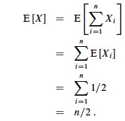
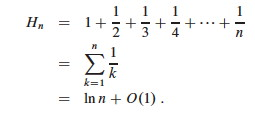
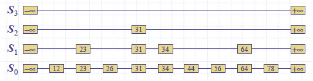
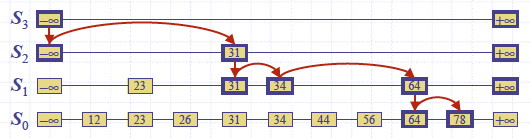

Outline
- Probabilistic Analysis
- Randomized Algorithms
- Skip Lists
Motivations and Preview
Instead of limiting analysis to best case or worst case, analyze all cases based on a distribution of the probability of each case.
We implicitly used probabilistic analysis when we said that given random input it takes n/2 comparisons on average to find an item in a linked list of n items.
Hiring Problem and Cost
The book’s example is a little strange but illustrates the points well. Suppose you are using an employment agency to hire an office assistant.
- The agency sends you one candidate per day: interview and decide.
- Cost to interview is c__i per candidate (fee to agency).
- Cost to hire is c__h per candidate (includes firing prior assistant and fee to agency).
- ch > ci
-
You always hire the best candidate seen so far.
Hire-Assistant(n) 1 best = 0 // fictional least qualified candidate 2 for i = 1 to n 3 interview candidate i // paying cost ci 4 if candidate i is better than candidate best 5 best = i 6 hire candidate i // paying cost ch
What is the cost of this strategy?
- If we interview n candidates and hire m of them, cost is O(cin + chm)
- We interview all n and ci is small, so we focus on chm.
- chm varies with each run and depends on interview order
- This is a common paradigm: finding the maximum or minimum in a sequence by examining each element, and changing the winner m times.
Best Case
If each candidate is worse than all who came before, we hire one candidate:
O(cin + ch) = O(cin)
Worst Case
If each candidate is better than all who came before, we hire all n (m =
n):
O(cin + chn) = O(chn) since ch > ci
But this is pessimistic. What happens in the average case?
Probabilistic Analysis
- We must know or make assumptions about the distribution of inputs.
- The expected cost is over this distribution.
- The analysis will give us average case running time.
We don’t have this information for the Hiring Problem, but suppose we could assume that candidates come in random order. Then the analysis can be done by counting permutations:
- Each ordering of candidates (relative to some reference ordering such as a ranking of the candidates) is equally likely to be any of the n! permutations of the candidates.
- In how many do we hire once? twice? three times? … n−1 times? n times?
- It depends on how many permutations have zero, one two … n−2 or n−1 candidates that come before a better candidate.
- This is complicated!
- Instead, we can do this analysis with indicator variables (next section)
Randomized Algorithms
We might not know the distribution of inputs or be able to model it.
Instead we randomize within the algorithm to impose a distribution on the inputs.
An algorithm is randomized if its behavior is determined in parts by values provided by a random number generator.
This requires a change in the hiring problem scenario:
- The employment agency sends us a list of n candidates in advance and lets us choose the interview order.
- We choose randomly.
Thus we take control of the question of whether the input is randomly ordered: we enforce random order, so the average case becomes the _ expected value_.
Probabilistic Analysis with Indicator Random Variables
Here we introduce technique for computing the expected value of a random variable, even when there is dependence between variables. Two informal definitions will get us started:
A random variable (e.g., X) is a variable that takes on any of a range of values according to a probability distribution.
The expected value of a random variable (e.g., E[X]) is the average value we would observe if we sampled the random variable repeatedly.
Indicator Random Variables
Given sample space S and event A in S, define the indicator random variable
We will see that indicator random variables simplify analysis by letting us work with the probability of the values of a random variable separately.

Lemma 1
For an event A, let XA = I{A}. Then the expected value E[XA] = Pr{A} (the probability of event A).
Proof: Let ¬A be the complement of A. Then
E[XA] = E[I{A}] (by definition)
= 1Pr{_A_} + 0Pr{¬A} (definition of expected value)
= Pr{A}.
Simple Example
What is the expected number of heads when flipping a fair coin once?
- Sample space S is {H, T}
- Pr{H} = Pr{T} = 1/2
- Define indicator random variable _X_H= I{H}, which counts the number of heads in one flip.
- Since Pr{H} = 1/2, Lemma 1 says that E[_X_H] = 1/2.
Less Simple Example
What is the expected number of heads when we flip a fair coin n times?
Let X be a random variable for the number of heads in n flips.
We could compute E[X] = ∑i=0,n__i Pr{X=i} -- that is, compute and add the probability of there being 0 heads total, 1 head total, 2 heads total … n heads total, as is done in C.37 in the appendix and in my screencast lecture 5A -- but it’s messy!
Instead use indicator random variables to count something we do know the probability for: the probability of getting heads when flipping the coin once:
- For i = 1, 2, … n define Xi = I{the _i_th flip results in event H}.
- Then X = ∑i=1,n__Xi. _ (That is, count the flips individually and add them up.)_
- Lemma 1 says that E[Xi] = Pr{H} = 1/2 for i = 1, 2, … n.
- Expected number of heads is E[X] = E[∑i=1,n__Xi]
- Problem: We don’t have ∑i=1,n__Xi; we only have E[X_1], E[_X_2], … E[_Xn].
- Solution: Linearity of expectation (appendix C): expectation of sum equals sum of expectations. Therefore:

The key idea: if it’s hard to count one way, use indicator random variables to count an easier way!
Hiring Problem Revisited
Assume that the candidates arrive in random order.
Let X be the random variable for the number of times we hire a new office assistant.
Define indicator random variables X_1, _X_2, … _Xn where Xi = I{candidate i is hired}.
We will rely on these properties:
- X = X_1 + _X_2 + … + _Xn (The total number of hires is the sum of whether we did each individual hire (1) or not (0).)
- Lemma 1 implies that E[Xi] = Pr{candidate i is hired}.
We need to compute Pr{candidate i is hired}:
- Candidate i is hired iff candidate i is better than candidates 1, 2, …, i−1
- Assumption of random order of arrival means any of the first i candidates are equally likely to be the best one so far.
- Thus, Pr{candidate i is the best so far} = 1/i.
(Intuitively, as you add more candidates each candidate is less and less likely to be better than all the ones prior.)
By Lemma 1, E[Xi] = 1/i, a fact that lets us compute E[X]:

The sum is a harmonic series. From formula A7 in appendix A, the _n_th
harmonic number is:

Thus, the expected hiring cost is O(ch ln n), much better than worst case O(chn)! (ln is the natural log. Formula 3.15 of the text can be used to show that ln n = O(lg n.)
We will see this kind of analysis repeatedly. Its strengths are that it lets us count in ways for which we have probabilities (compare to C.37), and that it works even when there are dependencies between variables.
Expected Number of Inversions
This is Exercise 5.2-5 page 122, for which there is a publicly posted solution. This example shows the great utility of random variables.
Let A[1.. n] be an array of n distinct numbers. If i < j and A[i] > A[j], then the pair (i, j) is called an inversion of A (they are “out of order” with respect to each other). Suppose that the elements of A form a uniform random permutation of ⟨1, 2, … n⟩.
We want to find the expected number of inversions. This has obvious
applications to analysis of sorting algorithms, as it is a measure of how much
a sequence is “out of order”. In fact, each iteration of the while loop in
insertion sort corresponds to the elimination of one inversion (see the posted
solution to problem 2-4c).
If we had to count in terms of whole permutations, figuring out how many permutations had 0 inversions, how many had 1, … etc. (sound familiar? :), that would be a real pain, as there are _n! permutations of n items. Can indicator random variables save us this pain by letting us count something easier? _
We will count the number of inversions directly, without worrying about what permutations they occur in:
Let Xij, i < j, be an indicator random variable for the event where A[i] > A[j] (they are inverted).
More precisely, define: X_ij= I{A[_i] > A[j]} for 1 ≤ i < j ≤ n.
Pr{X_ij_ = 1} = 1/2 because given two distinct random numbers the probability that the first is bigger than the second is 1/2. (We don’t care where they are in a permutation; just that we can easily identify the probabililty that they are out of order. Brilliant in its simplicity!)
By Lemma 1, E[X_ij_] = 1/2, and now we are ready to count.
Let X be the random variable denoting the total number of inverted pairs in
the array. X is the sum of all X_ij_ that meet the constraint 1 ≤ i < j ≤
n:

We want the expected number of inverted pairs, so take the expectation of both
sides:

Using linearity of expectation, we can simplify this far:
The fact that our nested summation is choosing 2 things out of n lets us
write this as:

We can use formula C.2 from the appendix:

In screencast 5A I show how to simplify this to (n(n−1))/2, resulting in:

Therefore the expected number of inverted pairs is n(n − 1)/4, or O(_n_2).
Randomized Algorithms

Above, we had to assume a distribution of inputs, but we may not have control over inputs.
An “adversary” can always mess up our assumptions by giving us worst case inputs. (This can be a fictional adversary in making analytic arguments, or it can be a real one …)
Randomized algorithms foil the adversary by imposing a distribution of inputs.
The modifiation to HIRE-ASSISTANT is trivial: add a line at the beginning that randomizes the list of candidates.
- The randomization is now in the algorithm, not the input distribution.
- Whereas before the algorithm was deterministic, and we could predict the hiring cost for a given input, now we can no longer say what the hiring cost will be.
- But our payoff is that no particular input elicits worst-case behavior, even what was worst-case for the deterministic version!
- Bad behavior occurs only if we get “unlucky” numbers.
Having done so, the above analysis applies to give us expected value rather than average case.
Discuss: Summarize the difference between probabilistic analysis and randomized algorithms.
Randomization Strategies
There are different ways to randomize algorithms. One way is to randomize the ordering of the input before we apply the original algorithm (as was suggested for HIRE-ASSISTANT above). A procedure for randomizing an array:
Randomize-In-Place(A)
1 _n_ = A.length
2 for _i_ = 1 to _n_
3 swap A[_i_] with A[Random(_i_,_n_)]
The text offers a proof that this produces a uniform random permutation. It is obviously O(n).
Another approach to randomization is to randomize choices made within the algorithm. This is the approach taken by Skip Lists …
Skip Lists
This is additional material, not found in your textbook. I introduce Skip Lists here for three reasons:
- They are a natural extension of the linked list implementation of Dynamic Sets, which we covered recently.
- They are a good example of a randomized algorithm, where randomization is used to improve asymptotic behavior from O(n) to O(lg n).
- They are one candidate implementation to be tested in your homework, the Battle of the Dynamic Sets!
Motivation: Why do we have to search the entire linked list one item at a time? Can’t we be more efficient by diving into the middle somewhere?
Skip lists were first described by William Pugh. 1990. Skip lists: a probabilistic alternative to balanced trees. Commun. ACM 33, 6 (June 1990), 668-676. DOI=10.1145/78973.78977 http://doi.acm.org/10.1145/78973.78977 or ftp://ftp.cs.umd.edu/pub/skipLists/skiplists.pdf (actually he had a conference paper the year before, but the CACM verion is more accessible).
My discussion below follows Goodrich & Tamassia (1998), Data Structures and Algorithms in Java, first edition, and uses images from their slides. Some details differ from the edition 4 version of the text.
An animated applet may be found at http://iamwww.unibe.ch/~wenger/DA/SkipList/.
Definition of Skip List
Given a set S of items with distinct keys, a skip list is a series of lists S_0, _S_1, … _Sh (as we shall see, h is the height) such that:
- Each S__i contains the special keys −∞ and +∞
- List S__h contains only −∞ and +∞
- List S_0 contains all of the keys of _S in nondecreasing order.
- Each list is a subsequence of the previous one: S_0 ⊇ _S_1 ⊇ … ⊇ _Sh. 
We can implement skip lists with nodes that have above and below fields as
well as the more familiar prev and next:

Searching a Skip List
An algorithm for searching for a key k in a skip list as follows:
SkipSearch(k)
Input: search key k
Output: Position p in S such that the item at p has the largest key ≤ k.
Let p be the topmost-left position of S // _which has at least -∞ and +∞_
while below(p) ≠ null do
p = below(p) // _drop down_
while key (next(p)) ≤ k do
p = next(p) // _scan forward _
return p.
Example: Search for 78:

Insertion and Randomization
Construction of a skip list is randomized:
- Begin by inserting the new item where it belongs in S0
- After inserting an item at level Si, flip a coin to decide whether to also insert it at Si+1.
- If Si+1 does not exist, the height of the Skip lists can be increased.
(Alternatively, some policy can be used to limit growth as a function of n, but the probability of a run of “heads” diminishes greatly as the number of flips increases.).
The psuedocode provided by Goodrich & Tamassia uses a helper procedure
InsertAfterAbove(p1, p2, k, d) (left as exercise), which inserts key k and
data d after p1 and above p2. (The following omits code for returning
“elements” not relevant here.)
SkipInsert(k,d)
Input: search key k and data d
Instance Variables: s is the start node of the skip list,
h is the height of the skip list, and n the number of entries
Output: None (list is modified to store d under k)
p = SkipSearch(k)
q = InsertAfterAbove(p, null, k, d) // _we are at the bottom level_
l = 0 // _keeps track of level we are at_
while random(0,1) ≤ 1/2 do
l = l + 1
if l ≥ h then // need to add a level
h = h + 1
t = next(s)
s = insertAfterAbove(null, s, −∞, null)
insertAfterAbove(s, t +∞, null)
while above(p) == null do
p = prev(p) // _scan backwards to find tower_
p = above(p) // _jump higher_
q = insertAfterAbove(p, q, k, d) // _add new item to top of tower_
n = n + 1.
For example, inserting key 15, when the randomization gave two “heads”, forcing growth of h (for simplicity the figure does not include the above and below pointers):

Deletion requires finding and removing all occurrences, and removing all but one empty list if needed. Example for removing key 34:

Analysis
The worst case performance of skip lists is very bad, but highly unlikely.
Suppose random(0,1) is always less than 1/2. If there were no bound on the
height of the data structure, SkipInsert would never exit! But this is as
likely as an unending sequence of “heads” when flipping a fair coin.
If we do impose a bound h on the height of the list (h can be a function of n), the worst case is that every item is inserted at every level. Then searching, insertion and deletion is O(n+h): you not only have to search a list S0 of n items, as with conventional linked lists; you also have to go down h levels.
But the probabilistic analysis shows that the expected time is much better. This requires that we find the expected value of the height h:
- Probability that item is stored at level i is the probability of getting i consecutive heads: 1/2_i_.
- Probability P_i_ that level i has at least one item: P_i_ ≤ n/2_i_ (We had n tries at getting i consecutive heads.)
- Probablity that h is larger than i is no more than P_i_.
- G&T show that given a constant c > 1, the probability that h is larger than c lg n is at most 1/n__c−1 (also worked out in screencast 5A).
- For example, for c = 3, the probability that h is larger than 3 lg n is at most 1/_n_2, which gets very small as n grows (e.g., p = .000001 = 1/1000000 for a list of length 1000).
- They conclude that the height h is O(lg n).
The search time is proportional to the number of drop-down steps plus the number of scan-forward steps. The number of drop-down steps is the same as h or O(lg n). So, we need the number of scan-forward steps.
In their textbook (1998), G&T provide this argument: Let Xi be the number of keys examined scanning forward at level i.

- After the starting position, each key examined at level i cannot also belong to level i+1. (Why?)
- Thus the probability that any key is counted in Xi is 1/2. (Why??)
- Therefore the expected value of Xi is the expected number of times we must flip a coin before it comes up heads: 2.
- Hence the expected amount of time scanning forward at each level is O(1). (Wow!)
- Since there are O(lg n) levels, the expected search time is O(lg n).
In their slides (2002), they provide this alternative analysis of the number of scan-forwards needed. The reasoning is very similar, but based on the odds of the list we encounter being constructed:
- When we scan forward in a list, the destination key does not belong to a higher list.
- Therefore, a scan forward is associated with a former coin toss that gave tails (otherwise it would be in the higher list).
- The expected number of coin tosses in order to get tails is 2.
- Therefore the expected number of scan-forward steps at each level is 2.
- Thus the total number of expected scan forward steps (summing across all h or O(lg n) levels) is O(lg n).
A similar analysis can be applied to insertion and deletion. Thus, skip lists are far superior to linked lists in performance.
G&T also show that the expected space requirement is O(n). They leave as an
exercise the elimination of above and prev fields: if random(0,1) is
called up to h times in advance of the insertion search, then one can insert
the item “on the way down” as specified by the results.
Dan Suthers Last modified: Tue Apr 15 16:40:33 HST 2014
Images of mathematical expressions are from the instructor’s material for
Cormen et al. Introduction to Algorithms, Third Edition. Images of skip lists
are from lecture slides provided by M. Goodrich & R. Tamassia.